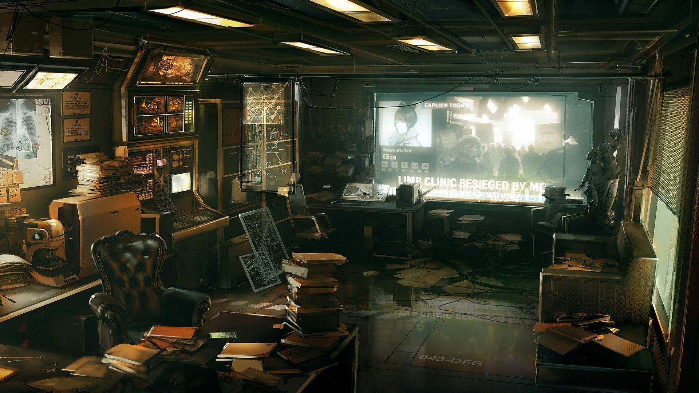

Do you like the cyberpunk?
Do you like the cyberpunk?, May 26, 2018

Cyberpunk
Cyberpunk is a subgenre of science fiction in a futuristic setting that tends to focus on a "combination of lowlife and high tech" featuring advanced technological and scientific achievements, such as artificial intelligence and cybernetics, juxtaposed with a degree of breakdown or radical change in the social order....
History and origins
History and origins, May 18, 2018

History
The origins of cyberpunk are rooted in the New Wave science fiction movement of the 1960s and 70s, where New Worlds, under the editorship of Michael Moorcock, began inviting and encouraging stories that examined new writing styles, techniques, and archetypes. Reacting to conventional storytelling, New Wave authors attempted to present a world where society coped with a constant upheaval of new technology and culture, generally with dystopian outcomes. Writers like Roger Zelazny, J.G. Ballard, Philip Jose Farmer, and Harlan Ellison often examined the impact of drug culture, technology, and the sexual revolution with an avant-garde style influenced by the Beat Generation (especially William S. Burroughs' own SF), dadaism, and their own ideas.[10] Ballard attacked the idea that stories should follow the "archetypes" popular since the time of Ancient Greece, and the assumption that these would somehow be the same ones that would call to modern readers, as Joseph Campbell argued in The Hero with a Thousand Faces. Instead, Ballard wanted to write a new myth for the modern reader, a style with "more psycho-literary ideas, more meta-biological and meta-chemical concepts, private time systems, synthetic psychologies and space-times, more of the sombre half-worlds one glimpses in the paintings of schizophrenics."